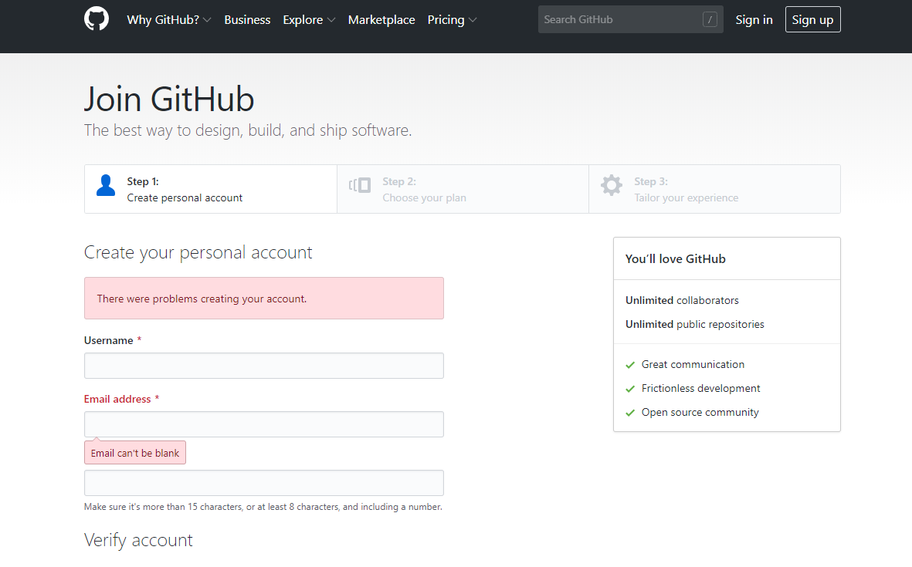
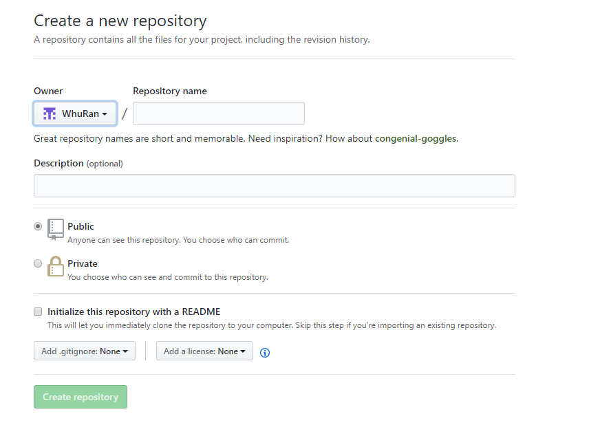
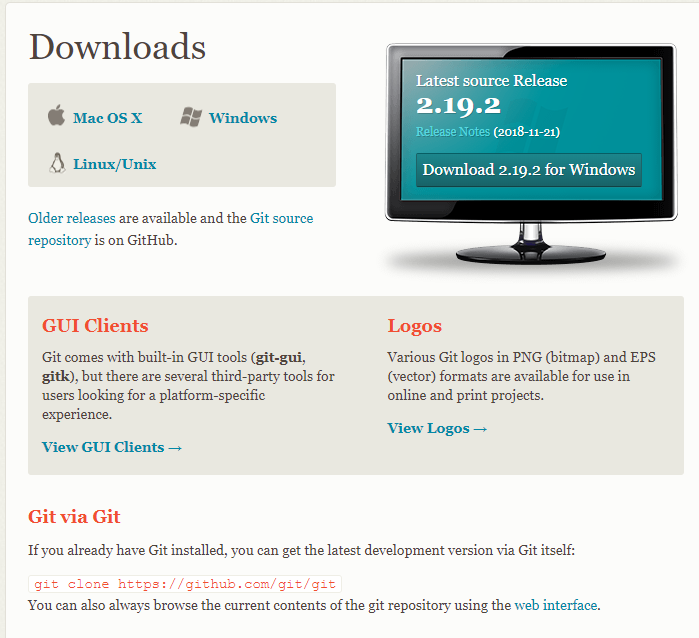

本文记录了自己第一次尝试使用github+hexo搭建个人主页的过程，包括踩过的种种坑。
目录
创建Github域名
注册Github账号
首先，我们需要先注册一个Github账号，如果已经有了Github账号，则跳过这一步。值得注意的是，创建的username会与我们的域名一致，即我们的域名将会是username.github.io，不过后期我们也可以更改username。 
创建仓库
注册好一个Github账号之后，我们需要创建一个仓库（repository）来存储我们的网站，点击首页New repository按钮新建一个仓库，Respository name 中的username.github.io 的username 一定与前面的Owner 一致，记住你的username下面会用到。 
安装Git、Nodejs和Hexo
目前主要有三种比较流行的开源静态网站构建工具：Jekyll、Hugo以及Hexo。我们选择Hexo来构建个人主页，因为Hexo前端开发者居多，有许多炫酷的页面。Hexo基于Nodejs，所以在安装Hexo之前，我们需要安装Nodejs。
安装Git
首先我们从官网找到最新版的Git，选择Windows进行下载，下载完成后一路的“Next”，安装完成之后在cmd中输入“git –version”查看是否安装成功。 
安装Nodejs并配置Nodejs环境
登录node官网选择对应的系统下载msi安装文件，下载好之后同样一路“Next”，安装完成之后在cmd中分别输入“node -v”和“npm -v”查看是否安装成功。
在nodejs的安装主目录中新建文件夹：node_cache和node_global。在cmd中输入命令： 1
2npm config set prefix "nodejs安装目录\node_global"
npm config set cache "nodejs安装目录\node_cache"
选择安装express模块在命令行中输入：npm install express -g (-g表示全局安装即安装到node_global目录下) 鼠标右键单击我的电脑→属性→高级系统设置→环境变量→在系统变量下新建NODE_PATH并输入“nodejs安装目录_global_modules”
安装Hexo
在上面所有步骤完成之后就可以安装Hexo了，在cmd中执行以下代码： 1
2npm install hexo-cli -g
npm install hexo --save
安装完成之后，下面我们就可以生成博客了。
撰写博客
首先我们需要用Hexo初始化一个博客目录，然后更改一些自定义的配置，或者换一个自己喜欢的主题。
创建博客
在cmd中执行以下代码会创建一个folder的文件夹。 1
hexo init folder
1
2
3cd foler
cd themes
git clone "复制的github地址" "自定义一个主题名称"
更改配置
安装好主题之后，打开_config.yml文件，按照以下格式修改配置： 1
2
3
4
5
6
7
8
9
10
11
12
13
14
15
16
17
18
19
20
21title: 武大没有郎 //你博客的名字
description: 读书·旅行·交友·运动·爱人
author: WRan //你的名字
language: zh-cn //语言 中文
url: http://localhost:4000
root: /
theme: tranquilpeak
post_assert_folder: true
relative_link: false
deploy:
type: git //使用Git 发布
repo: https://github.com/WhuRan/wran.github.io.git // 刚创建的GitHub仓库（可能需要自己添加此行）
feed:
type: atom
path: atom.xml
limit: 20
支持Latex语法
要实现Latex语法支持，就需要用到hexo-filter-mathjax这个Hexo插件 1
npm install hexo-filter-mathjax
1
2
3
4
5
6
7mathjax:
tags: none # or 'ams' or 'all'
single_dollars: true # enable single dollar signs as in-line math delimiters
cjk_width: 0.9 # relative CJK char width
normal_width: 0.6 # relative normal (monospace) width
append_css: true # add CSS to pages rendered by MathJax
every_page: false # if true, every page will be rendered by MathJax regardless the `mathjax` setting in Front-matter1
2
3brew install pandoc #mac OS 安装 pandoc
npm uninstall hexo-renderer-marked --save
npm install hexo-renderer-pandoc --save
该插件的使用方法比较简单，仅需要在文章的预定义部分添加mathjax: true，这个控制项即可，示例如下： 1
2
3
4
5
6---
title: On the Electrodynamics of Moving Bodies
categories: Physics
date: 1905-06-30 12:00:00
mathjax: true
---
tranquilpeak设置
具体设置tranquilpeak的时候，可以参考作者的Github的指示。值得注意的地方主要有两点： 1、如果修改自己的工作和签名，我们需要到languages/zh-cn.yml文件中进行修改 1
2
3
4
5author:
# 你的个人简介 (支持 Markdown 和 HTML 语法)
bio: "读书·旅行·交友·运动·爱人"
# 你的工作简介
job: "under postgraduate"
2、在设置文章的缩略图的时候，thumbnailImage是设置缩略图的位置，我们需要将hexo的_config.yml中的url改为http://localhost:4000，否则在执行hexo s的时候会加载不出来缩略图，当然发布到Github上的时候需要改为我们的Github网址。
3、如果对文章有分类的话，可以使用all-categories页面，更方便的查找文章，hexo new page all-categories，在source产生一个新的文件夹all-categories，文件夹内的文件index.md修改成如下： 1
2
3
4
5---
title: "all-categories"
layout: "all-categories"
comments: false
---1
2
3
4
5
6
7
8
9
10
11
12
13
14
15
16
17menu:
home:
title: global.home
url: //
icon: fa fa-home
categories:
title: global.categories
url: /all-categories
icon: fa fa-bookmark
tags:
title: global.tags
url: /all-tags
icon: fa fa-tags
archives:
title: global.archives
url: /all-archives
icon: fa fa-archive1
2
3
4
5
6
7
8
9
10
11
12
13
14
15
16
17
18
19
20
21
22
23
24
25
26
27
28
29
30
31
32
33
34
35
36
37---
title: 第一篇博客 //博客的标题
subtitle: 子标题
tags:
- Android
- 前端
clearReading: true
thumbnailImage: thumbnail_image.jpg //缩略图
thumbnailImagePosition: bottom //缩略图位置
autoThumbnailImage: true
metaAlignment: center
coverImage: cover_image.jpg
coverCaption: "图片说明"
coverMeta: in
coverSize: partial
comments: false
meta: false //设置为true就可以在标题中正常显示日期
actions: false
---
这里是文章的概览，显示在主页缩略内容上面
<!-- more -->
这里是自动生成的文章目录
<!-- toc -->
这是我们的第一篇博客
# 这是大标题
## 这是二级标题
## 这里有个本地图片

## 这里有个网络图片

测试
在cmd中执行以下代码： 1
hexo s
https://localhost:4000访问了。
安装hexo-deployer-git自动部署发布工具 1
npm install hexo-deployer-git --save
1
hexo clean && hexo g && hexo d
注意：这里的github推送地址和当前Hexo项目地址是分开的，也就是说，github.io的地址上面是没有hexo源码的，只有生成的静态页面。
查看效果
恭喜你能走到这一步，你的博客已经完成了，在浏览器中输入https://username.github.io就能够访问了。